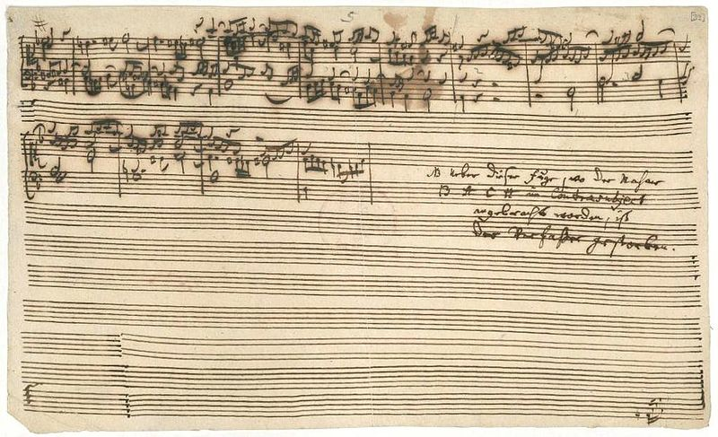

Lo stile musicale di Bach è il frutto di una commistione tra lo stile tedesco e le opere dei
compositori italiani e francesi del tardo Barocco. La produzione musicale di Bach copre pressoché per intero la prima
metà del Settecento e costituisce una sintesi ideale delle forme e degli stili fioriti nella fase
terminale del periodo barocco.
Il suo genio musicale e il suo precoce talento si mostrarono già nell’adolescenza, nella capacità e
nell’abilità di organizzare opere complesse basate sui modelli dei compositore e organisti tedeschi
come Bietrich Buxtehude, George Böhm
e Johann Adam Reincken.
Spinto da una continua curiosità Bach già da ragazzo ricopia per uso personale i Fiori musicali di
Frescobaldi e si familiarizza ulteriormente con lo stile italiano – basato sulla plasticità ritmica e la
cantabilità ariosa – trascrivendo per organo i concerti di Vivaldi e utilizzandone l’idioma in
composizioni proprie (Concerto italiano per clavicembalo); oppure modella sullo stile francese –
caratterizzato dall’uso frequente di note puntate, dal tono solenne, dall’inserimento di danze tipiche
come la bourrée, la sarabanda, la giga, il minuetto – le quattro ouvertures per orchestra scritte a
Köthen e le Suites francesi, ancora per clavicembalo.
Lo stile di Bach, nonché la straordinaria varietà della sua produzione è determinata prevalentemente
dagli obblighi derivanti dai suoi incarichi professionali, che lo portano a spaziare negli ambiti più
diversi (se a Köthen prevale la produzione strumentale, a Lipsia
viceversa il compositore si trova a
dover scrivere per la chiesa di San Tommaso una nuova cantata sacra ogni settimana).
Un altro fattore non trascurabile dello stile di Bach, risiede nell’abilità tecnica che la sua musica
richiede all’esecutore. Bach è un virtuoso singolare, nel corso della sua attività di direttore di gruppi
vocali e strumentali, esige dai suoi collaboratori il massimo impegno. La sua musica, non solo
quella per gli strumenti di cui è maestro, appare sin dall’inizio estremamente difficile sul piano
tecnico.
Esempi di quest’arte strumentale sono: le Suite per violoncello, le sonate e partite per violino, e
nell’ambito della produzione orchestrale i sei Concerti brandeburghesi, dedicati al margravio del
Brandeburgo. In queste opere, che risalgono al periodo di Köthen, Bach esplora le caretteristiche
timbriche e tecniche degli strumenti e spinge la scrittura sino ai limiti estremi delle possibilità
esecutive. Il principio dell’imitazione e lo stile fugato dominano costantemente, persino nei brani di
maggior abbandono lirico, come per esempio il secondo movimento del Concerto in Re minore per
due violini e orchestra.
Non bisogna trascurare, quando si parla dello stile musicale di Bach, il suo rapporto con la
religione.
Bach infatti era molto devoto alla fede luterana, pertanto pose molta attenzione alla musica sacra,
tanto che gli inni luterani furono alla base di molte sue composizioni. L’importanza per la liturgia lo
portò a scrivere composizioni sacre di elevato valore sia tecnico che qualitativo.
Creato, per esempio, la Passione di San Matteo, come altre opere del suo genere, illustrava la
Passione con testi biblici che si riflettevano non solo in recitativi, arie, cori e corali, ma, nel creare
quest'opera, Bach ha creato un'esperienza complessiva che è stata trovata musicalmente
elettrizzante e spiritualmente profonda.
Il contributo di Johann Sebastian Bach alla musica o, per utilizzare un'espressione resa popolare dal
suo allievo Lorenz Christoph Mizler, alla "scienza della musica" è di frequente comparato al
contributo di William Shakespeare alla letteratura inglese e di Isaac Newton per la fisica. Durante la
vita, egli compose oltre 1000 opere.
Un altro accostamento che viene fatto quando si parla dello stile di Bach è con la matematica. Egli,
in alcune sue opere, utilizza in maniera sistematica trasformazioni geometriche che stravolgono,
invertono, dilatano il tema musicale.
Una trasformazione classica è il canone e cioè lo spostamento nel tempo, ovvero la ripetizione del
tema iniziale mediante una seconda voce che unisce a una melodia una o più imitazioni, che le si
sovrappongono progressivamente e sono sfasate rispetto alla prima.
Anche l’inversione è una tecnica contrappuntistica, che consiste nel suonare lo stesso tema
originale, ma al contrario. Così, ad esempio, se una voce recita il tema e la seconda ripete lo stesso
tema al contrario e spostato nel tempo, avremo un canone inverso.
L’opera di Bach costituì la summa e lo sviluppo delle tendenze compositive della sua epoca. Il
grado di complessità strutturale e la difficoltà tecnica di esecuzione della sua musica, resero la sua
opera appannaggio solo dei musicisti più dotati e all’epoca ne limitarono la diffusione fra il grande
pubblico.
Francisco Rodriguez Barrientos, a proposito di Bach, ha scritto: “Nessun teologo è stato così convincente come Bach: se si guarda
bene, tutte le dottrine teologiche hanno lasciato delle fessure attraverso le quale si possono
sbirciare difetti e bassezze indegne di una divinità. A vedere un Dio così mal parato, l’incredulità e
l’ironia sostituiscono la fede. Al contrario, la musica di Bach è un’estasi che crea e rende credibili
gli Dei e l’Infinito”.
Bach è stato uno dei più grandi musicisti a saper scrivere,

in maniera esemplare, pezzi tramite l’arte della fuga.
Ne è un esempio l’opera "Die Kunst der Fuge", la quale sarà la sua ultima opera scritta(all’epoca era ceco, perciò la dettava e suo figlio la
scriveva).
È stato scritto tra il 1740 ed il 1747(anno di morte del celebre compositore) ed è una raccolta di composizioni. L’opera
è composta da diciannove fughe, ma il loro numero varia a seconda del criterio di classificazione che i diversi editori adottarono per
dividerle o accorparle. La raccolta esplora sistematicamente tutte le possibilità offerte da un semplice tema in re minore elaborato
secondo diverse tecniche compositive, come la variazione e il rovesciamento degli intervalli in maniera speculare. Insieme a “L’offerta musicale”,
“L'arte della fuga” è riconosciuta come una delle opere più complesse e articolate mai scritte e viene universalmente considerata uno dei vertici più
alti mai raggiunti dalla polifonia contrappuntistica nella storia della musica. Inoltre L'arte della fuga ha come tema B A C H, rispettivamente le note
Si, La, Do, Si nella notazione letterale. Sfortunatamente l’opera rimase incompiuta perché Bach morì durante la stesura. Questo “testamento musicale”
è curato nei minimi dettagli, che lo rendono un capolavoro. PERCHE NON INSERIRE IL VIDEO QUI???
Oggi parleremo del “suo” strumento: l’organo
In musica , l’organo (dal greco ὄργανον organon, significa strumento strumento) è uno strumento a tastiera formato
da una o più divisioni di canne o altri mezzi per produrre suoni, ognuna suonata con la propria tastiera o con la
propria pedaliera . L’;organo è uno strumento musicale relativamente antico, che risale al tempo di Ctesibio di
Alessandria (285-222 a.C.), che inventò l' organo idraulico . È stato suonato in tutto il mondo antico , greco
romano , in particolare durante gare e giochi. [1] Durante il primo periodo medievale si diffuse dall’ Impero
bizantino , dove continuò ad essere utilizzato nella musica di corte (non religiosa), in Europa occidentale ,
dove gradualmente assunse un posto di rilievo nella liturgia della Chiesa cattolica . [1] Successivamente riemerse
come strumento secolare e recitativo nella tradizione della musica classica . I contemporanei del XVII secolo lo
apprezzano come organista, ma non come compositore per lo stile considerato arcaico e ancorato alla tradizione
polifonica rinascimentale. Le toccate di Bach sono particolarmente indicate per essere eseguite su strumenti
dalle caratteristiche timbriche ed espressive diverse. Già le prime note di quella che con ogni probabilità
è l’opera per organo più famosa di tutti i tempi, vale a dire la Toccata e fuga in re minore BWV 565, vengono
eseguite da Christoph Schoener come un’affascinante installazione da camera, e quando il timbro celestiale
dell’organo d’eco scende dall’alto la perfetta immagine sonora tridimensionale di questa edizione mostra
il suo lato più spettacolare. Titolare del posto di organista della Michaeliskirche di Amburgo, Christoph
Schoener esegue le toccate di Bach con un approccio storicamente informato, al quale si aggiungono una contagiosa
musicalità e il piacere della ricerca di aspetti inediti di opere per il resto conosciutissime.
è una raccolta, divisa in 2 libri, di preludi e fughe per strumento in 12 tonalità, composta da Johann Sebastian Bach. Gli strumenti
con cui eseguirlo sono molti, Il brano viene eseguito di norma al clavicembalo o pianoforte.
Johann Sebastian Bach compose una raccolta di brani per clavicembalo. Il primo libro fu scritto nel 1722 il secondo 22 anni dopo.
é una raccolta di 48 composizioni, suddivisa in 2 libri di 24 ciascuna, preludio e una fuga per ogni tonalità; possibile sia maggiore che minore. La prima coppia
è grave; in do maggiore, la seconda in do minore, e così; via. Lo schema segue la scala cromatica fino al completamento di tutte le tonalità; maggiori e minori
(con il sistema tonale)
Clavicembalo ben temperato= ben accordato.Questa è una scelta del compositore. Non solo una raccomandazione per chi voglia suonare senza stonare,
ma la scelta di usare il TEMPERAMENTO EQUABILE. Il temperamento, in quel periodo (ai tempi di Bach), era definito un "buon temperamento" ogni sistema di accorda
tura che permettesse di suonare in tutte le tonalità pur restando inequabile. Al contrario il temperamento mesotonico, che era di uso corrente, non era un buon
temperamento. Quest'opera testimonia il supporto di Bach a un sistema di accordatura (il temperamento) che per i suoi tempi era molto innovativo.
 ascolto 1 INSERIAMOLO SOPRAAAA!!!
ascolto 2
ascolto 1 INSERIAMOLO SOPRAAAA!!!
ascolto 2
ll Magnificat in re maggiore BWV 243 è una delle più importanti opere vocali di Johann Sebastian Bach. Si tratta di una cantata sacra composta per orchestra, coro a cinque voci e cinque solisti. Il testo è tratto dal cantico contenuto nel primo capitolo del Vangelo secondo Luca, con il quale Maria loda e ringrazia Dio perché ha liberato il suo popolo. Il Magnificat, insieme alla Messa in Si minore, costituisce una delle due principali composizioni in lingua latina di Johann Sebastian Bach.
Bach compose una prima versione in mi bemolle maggiore nel 1723 per i vespri di Natale a Lipsia, versione che conteneva numerosi testi natalizi. Nel corso degli anni il compositore rimosse i brani specifici per il Natale in modo da rendere il Magnificat eseguibile durante tutto l'anno. Bach traspose anche il brano da mi bemolle maggiore a re maggiore, tonalità più adatta per le trombe. La nuova versione, che è quella conosciuta oggi, venne eseguita per la prima volta nella Thomaskirche di Lipsia il 2 luglio 1733.
La cantata è divisa in dodici parti che possono essere raggruppate in tre movimenti, ognuno inizia con un'aria ed è completato dal coro. L'esecuzione integrale del Magnificat, nella versione del 1733, dura circa trenta minuti.
Messa in si minore BWV 232
La Messa in si minore, è una composizione di musica sacra scritta da Johann Sebastian Bach. Come il nome stesso spiega, si tratta della trasposizione musicale della Messa nell'usuale lingua latina del rito cattolico, quella che viene definita messa cantata. Alcune parti della Messa in Si minore risalgono al 1724, tuttavia l'insieme è stato completato nella forma attuale nel 1749, l'anno prima della morte del compositore, avvenuta nel 1750.
Da sottolineare che tale composizione, non è in alcun modo una forma di omaggio al Cattolicesimo, come confermato da alcuni dettagli della partitura. Nel Sanctus è infatti presente la forma luterana Pleni sunt caeli gloria ejus ("I cieli sono pieni della sua gloria") anziché la cattolica Pleni sunt caeli et terra gloria tua ("I cieli e la terra sono pieni della tua gloria"), che allo stesso tempo è un velato omaggio ad Augusto III di Polonia, al quale è riservata un'altra evidente dedica nel Gloria.
Vai alla seguente pagina
Concerti brandeburghesi BWV 1046-1051
Nei Brandeburghesi il compositore coniuga la lezione assimilata dai modelli italiani (Vivaldi Corelli Albinoni e Alessandro Marcello) col contrappunto rigoroso e con alcune strutture della musica vocale, imprimendo una sigla personalissima a questo genere d'avanguardia nel panorama musicale dell'epoca. Bach utilizza di volta in volta con somma libertà le forme principali dei suoi tempi: il concerto grosso, in cui un concertino di pochi strumenti si contrappone all'intera orchestra d'archi, denominata appunto concerto grosso; il concerto solistico tripartito, con la sua alternanza razionale di episodi solistici e ritornelli orchestrali; il concerto di gruppo, nel quale non emergono protagonismi di singoli attori; la sonata da camera, a tre e a quattro.
Le novità storiche più importanti della serie dei Concerti Brandeburghesi provengono dal Concerto n. 5 in re maggiore BWV 1050, che integra all'interno di una struttura da concerto grosso una parte solistica preponderante, scritta per uno strumento che attorno al 1720 non aveva status solistico: il clavicembalo.
Vai alla seguente pagina
La toccata e fuga in re minore "dorica
E’ un brano organistico composto a Lipsia da un ormai maturo Johann Sebastian Bach
È notevole l'assenza del si bemolle in chiave, che pure la tonalità di re minore richiede. Ciò può essere considerato come un tributo ai maestri cinque-seicenteschi, la cui musica, ancora indissolubilmente legata all'arte rinascimentale e ai modi gregoriani, non necessitava, salvo rarissimi casi, di alterazioni in chiave (bisogna ricordare che la particolare accordatura degli antichi strumenti permetteva di utilizzare un numero decisamente ristretto di tonalità); proprio l'assenza del si bemolle dall'armatura ha fatto accostare la composizione al modo dorico, da cui il soprannome. Al carattere spiccatamente strumentale della toccata, Bach contrappone una fuga di gusto vocale. Il tema, assai severo, ben si adatterebbe anche per un mottetto a quattro voci. A ben guardare, però, anche la fuga, gradualmente, si trasforma, sul finire, in un brano di carattere strumentale.
Vai alla seguente pagina
Aria sulla quarta corda
L’aria sulla quarta corda è l'arrangiamento di August Wilhelmj del secondo movimento della Suite orchestrale n. 3 in re maggiore, BWV 1068, di Johann Sebastian Bach.
L'arrangiamento differisce dall'originale in quanto la parte dei primi violini è trasposta verso il basso in modo che possa essere suonata interamente sulla corda più bassa del violino, cioè la corda sol, che corrisponde appunto alla quarta corda. È suonata da un singolo violino (anziché da tutto il gruppo dei primi violini).
La suite è composta da tre trombe, timpani, due oboi, archi (due parti per violino e una parte per viola) e basso continuo. Nel secondo movimento della suite, però, suonano solo gli archi e il basso continuo. Questo è l'unico movimento della suite in cui tutti gli altri strumenti tacciono.
La musica dell'Aria è scritta su quattro pentagrammi, per violino I, violino II, viola e basso continuo. Le linee di melodia intrecciate degli archi nel registro acuto sono in contrasto con la spinta ritmica pronunciata nel basso.
Vai alla seguente pagina
Jesus bleibet meine freude
E’ il titolo di una celebre sezione musicale della cantata Herz und Mund und Tat und Leben, BWV 147, composta da Johann Sebastian Bach nel 1723.
Una trascrizione della pianista inglese Myra Hess (1890-1965) fu pubblicata nel 1926 per pianoforte solista e nel 1934 per due pianoforti. Viene spesso eseguita lentamente e con reverenza durante le cerimonie nuziali, nonché durante le festività cristiane come Natale e Pasqua.
Bach compose una versione a quattro parti con accompagnamento orchestrale indipendente di due stanze dell'inno "Jesu, meiner Seelen Wonne", scritto da Martin Janus nel 1661, che veniva cantato su una melodia del violinista e compositore Johann Schop, "Werde munter, mein Gemüthe". I movimenti concludono le due parti della cantata.
Bach compose i movimenti del corale (6 e 10) di Herz und Mund und Tat und Leben per coro, tromba, violino, opzionalmente oboe, viola e basso continuo.
Vai alla seguente pagina
Torna all'inizio